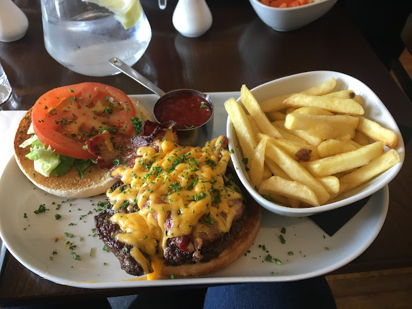
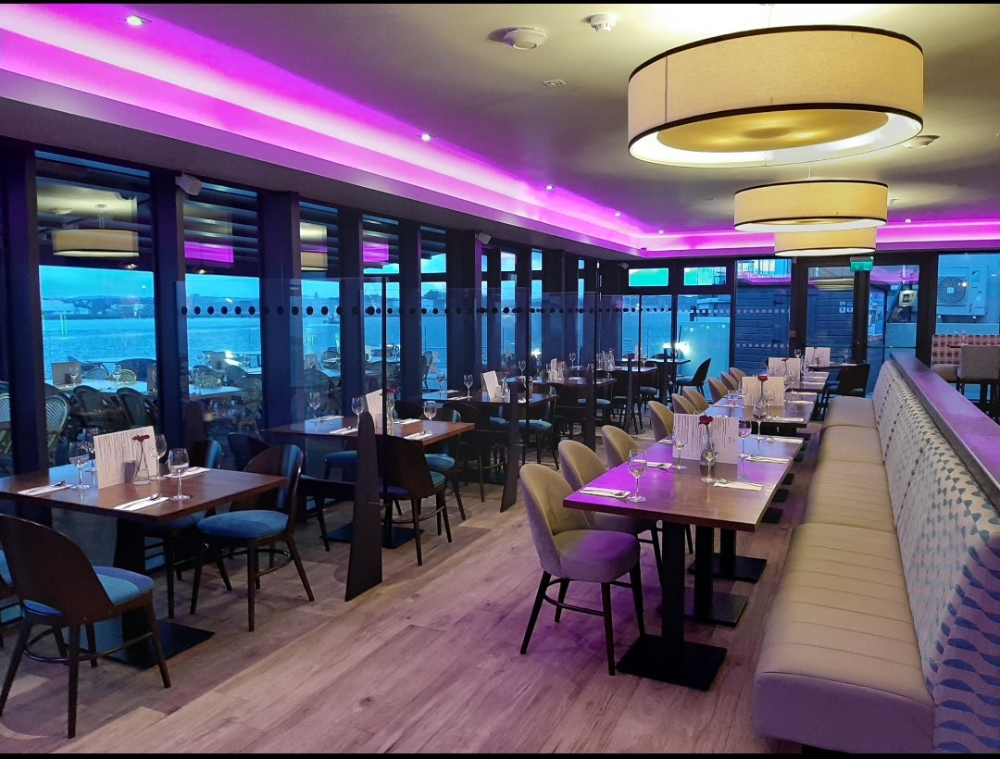

The Quays
5 Stars
Recently renovated The Quays Bar & Restaurant proudly boasts a larger outdoor seating area with a BBQ grill. Our new covered and heated patio area is the perfect spot for any event. The spectacular views of Cork Harbour and relaxing atmosphere make The Quays an experience not to be missed. Enjoying prime location along the waterfront in the heart of Cobh with strong focus on fresh seafood and inviting ambiance the Quays is a must for locals and visitors alike..

Menu